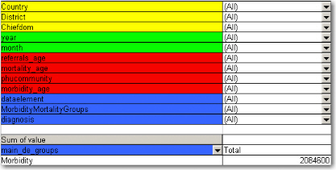
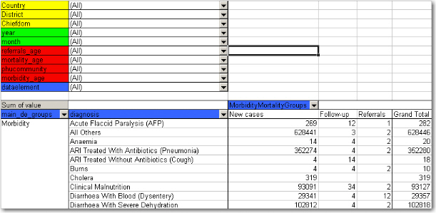
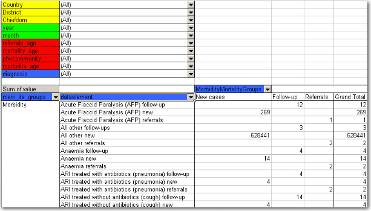
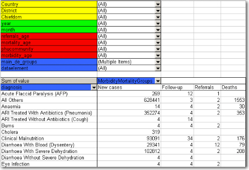
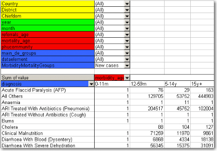
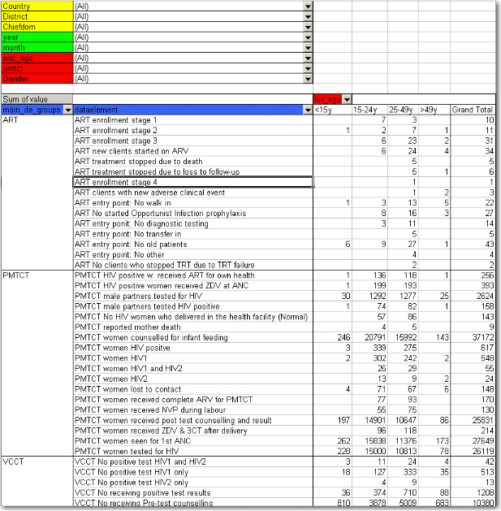
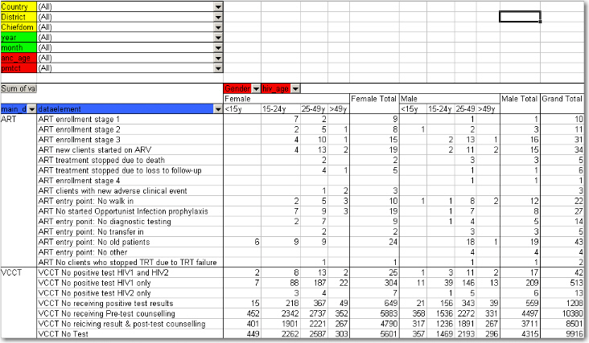

When doing data analysis in Excel pivot tables or any other OLAP based tool the dimensions become extremely powerful in providing many different views into the data. Each data element category or group set become a pivot field, and the options or groups become values within each of these fields. In fact categories and groupsets are treated exactly the same way in pivot tables, and so are orgunits, periods, and data elements. All these become dimensions to the data value that can be used to rearrange, pivot, filter, and to drill down into the data. Here we will show some examples of how the data dimensions are used in pivot tables.
Using the example of morbidity and mortality data, a pivot table can show how the dimensions can be used to view data for different aggregation levels.
The completely aggregated number is viewed when none of the pivot fields are arranged in the table area, as column or row fields, but are listed above the table itself as page field (filter).
|  |
Here we have selected to look at the Morbidity total. The various data elements on morbidity have been ordered into the main_de_groups Morbidity (we will get back to Mortality later). The fields above the table itself are all set to "All", meaning that the totals in the table will contain data from all Countries, Districts, Chiefdom, ou_type, year, months, the various categories as listed in the red fields, and all data elements in the Morbidity group.
As we have seen, this is not a very useful representation, as Morbidity is organized into new cases, follow-ups, referrals, and then again in age groups. Also, we do not see the various diagnoses. The first step is to include the diagnoses field (which is a group set), which is done by dragging the "diagnosis" field down to be a row field, as shown in the figure below, and to add the group set called "morbiditymortality" in the column field to display new cases, follow-up, and referrals.
DHIS2 Login screen
|  |
Contrast this figure above to the one below.
|  |
They both show the same data (some of the rows have been cut in the screenshot due to image size), albeit in a different way.
The "dataelement" field, used in the bottom figure, displays each diagnosis as three elements; one follow-up, one new, and one referrals. This is the way the data elements have been defined in DHIS, as this makes sense for aggregation. You would not like to aggregate follow-ups and new, thus these have not been made as categories, the whole point of is to ease aggregation and disaggregation.
The "diagnosis" group set has instead been made to lump these three (follow-up, new, referrals) together, which can then be split with another group set, namely the one called "morbiditymortality". This allows us to organize the data as in the first of the two figures, where we have the single diagnosis per row, and the groups new, follow-up, referrals as rows.
The idea of using group sets is that you can combine, in any set, different data elements. Thus, if we add the mortality data (by checking it from the drop-down menu of the main_de_groups field, and moving this field out of the table) we can see also the deaths, since the mortality data elements have been included as a "death" group in the "morbiditymortality" group set. The result is shown below.
DHIS2 Login screen
|  |
The result is a much more user-friendly pivot table. Now, another figure shows the relationship between the group sets and elements (these are fake data values).
This small detail of the pivot table show how the actual data elements link to the group sets:
The four data elements, as defined in DHIS, are Measles death, Measles follow-up, Measles new, and Measles referrals
They all belong to the group set "diagnosis", where they have been lumped together in the group Measles
The group set "morbiditymortality" contains the groups New cases, Follow-up, Referrals, and Deaths.
Only the data element Measles deaths has data related to the group Deaths, thus this is where the data value (20) is shown, at the upper right corner. The same for Measles new; the value (224) is shown at the intersection of the data element Measles new and the group New cases (in the group set morbiditymortality)
All the intersections where the data element does not link with the groups in morbiditymortality are left blank. Thus in this case we would get a nice table if we excluded the dataelement from the table, and just had diagnosis and the group set morbiditymortality, as in the figure shown earlier
Now lets see how the data element categories can be used. In the data entry form for Morbidity the new cases and follow-ups use one age category, the referral data another,, and the mortality data a third age breakup, so these are available as three individual age group fields in the pivot tables called morbidity_age, referrals_age and mortality_age. It doesn't make sense to use these while looking at these data together (as in the examples above), but e.g. if we only want to look at the only the new cases we can put the MobidityMortalityGroups field back up as a page field and there select the New cases group as a filter. Then we can drag the Morbidity_age field down to the column area and we get the following view:
|  |
The following table illustrates the benefits of reusing data element categories across datasets and categorycombinations. The VCCT, ART and PMTCT data are collected in three different datasets, the first two with both gender and age breakdown, and the PMTCT only age (gender is given). All three share the same age groups and therefore it is possible to view data elements from all these three datasets in the same table and use the age dimension. In the previous example with morbidity and mortality data this was not possible since new cases, referrals and deaths all have different age groups.
|  |
In the table below PMTCT data has been removed from the table and the gender category added to the column area so that you can analyse the data for VCCT and ART by age and gender. An optional subtotal for gender has also been added, as well as a grand total for all age and gender.
|  |